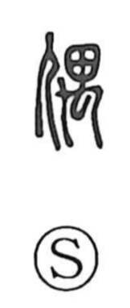

偶

Uncategorized
Kun: tama | On: guu
pair ・ even number ・ effigy ・ figurine
Explanation
偶 is a phono-semantic compound: the person radical marks the human sphere, while the phonetic 禺—originally the image of a small animal crouching in wary stillness—provides the sound. In use, the graph came to denote a human-shaped figure (hitokata). Such effigies, fashioned from clay or wood (dogu and mokugu), served as the focus of rituals, including cursing rites, and were also placed among grave goods. Because these figures were often arranged in matched pairs, the character further developed the senses of being paired or set in line, and by extension the idea of even numbers.